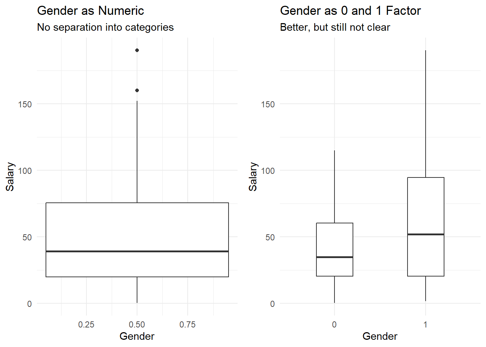
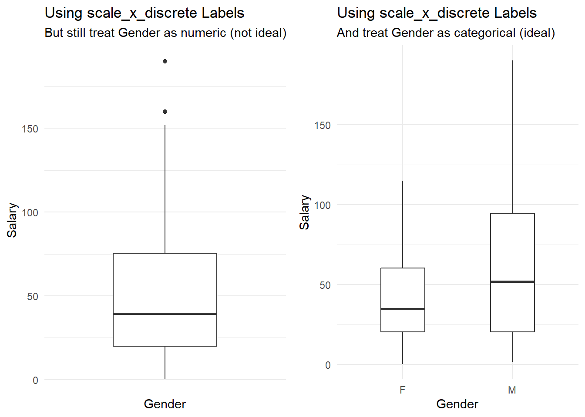
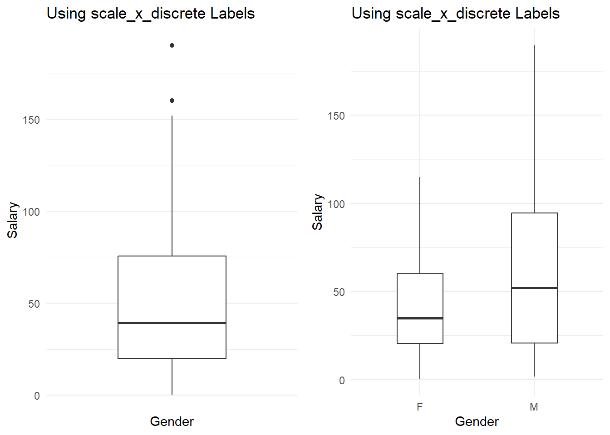
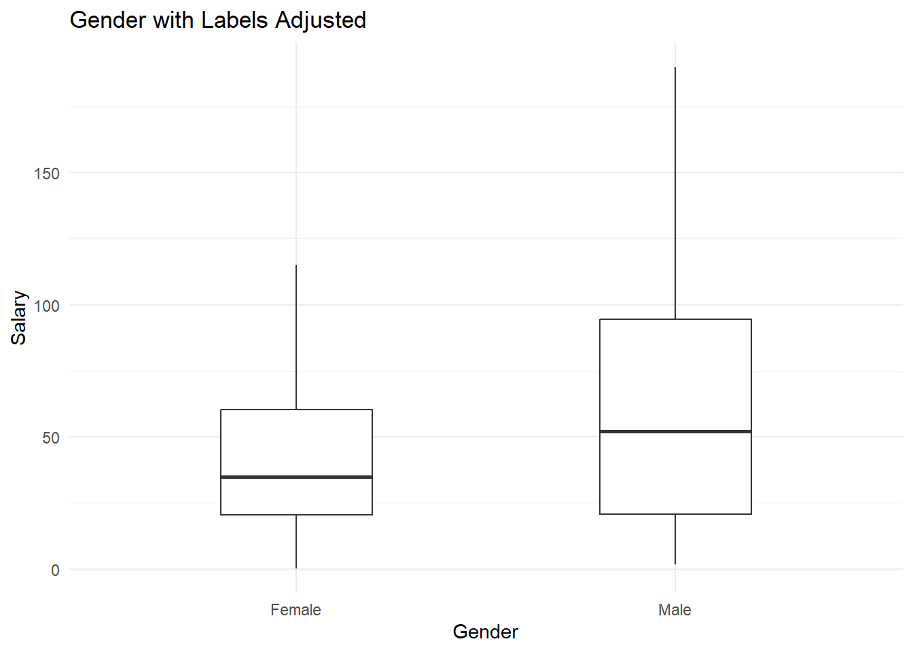
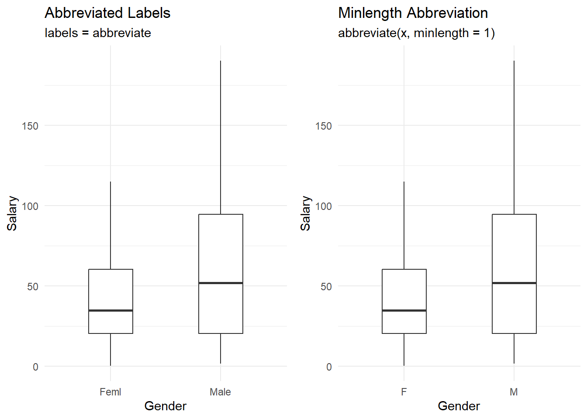
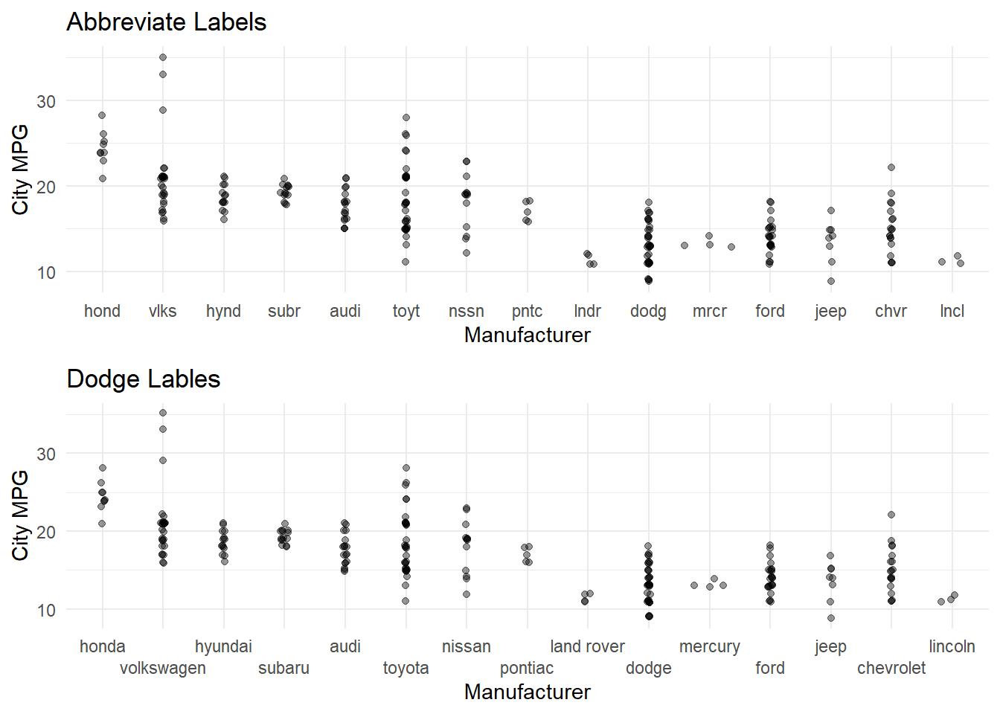

Outside Labels
Outside labels refers to labeling all items on the “outside” of the graph. These include X and Y axis labels, titles, subtitles, captions, and legend titles. Things NOT included are labeling elements inside the graph (e.g. labeling specific points, specific lines, areas, etc.)
To adjust outside labels, we’ll use the gf_labs( ) command.
1 General Labels
theme_set(theme_minimal())
gf_point(Sepal.Length~Sepal.Width, data = iris, color = ~Species) %>%
gf_labs(
y = "Sepal Length",
x = "Sepal Width",
color = "Species\nName",
title = "Setosa have significantly different sized sepal",
subtitle = "While Versicolor & Virginica are more similar",
caption = "Iris Dataset")
2 Notes on Labels
Note that to split labels onto multiple lines, use ‘\n’ (example in color label above)
Other items that can be labeled are:
fill = “label fill legend”
size = “label size legend”
alt = “add alt text to the plot”
3 Adjusting Default Labels
Sometimes the categorical labels are not what we want. For example, in the Lock5Data SalaryGender, PhD and Gender are coded as 0 and 1. This is not very clear.
Here are some ways to adjust those labels.
There are a couple problems with having the 0 and 1 labels for Gender. First, the default treating is going to be numeric - which is not ideal. At the very least, we want Gender treated as a factor. We can use the as.factor( ) command to force RStudio to read Gender as a factor. This is better, but still unclear.
numeric.gender = gf_boxplot(Salary~Gender, data = SalaryGender, width = 0.4, position= position_dodge(.5)) %>%
gf_labs(x = "Gender", title = "Gender as Numeric", subtitle = "No separation into categories")
factor.gender = gf_boxplot(Salary~as.factor(Gender), data = SalaryGender, width = 0.4, position= position_dodge(.5)) %>%
gf_labs(x = "Gender", title = "Gender as 0 and 1 Factor", subtitle = "Better, but still not clear")
grid.arrange(numeric.gender, factor.gender, nrow = 1)## Warning: Continuous x aesthetic
## ℹ did you forget `aes(group = ...)`?
3.1 Adjust labels (but not data itself)
One option is to use scale_x_discrete(labels = c(“0” = “F”, “1” = “M”)) to adjust the labels given. This will adjust what R puts on the x-axis, but it doesn’t actually make Gender a factor with F and M. R Still treats it as a number. Thus, we still have to have as.factor(Gender) to get separate boxes.
no.factor.gender = gf_boxplot(Salary~Gender, data = SalaryGender, width = 0.4, position= position_dodge(.5)) %>%
gf_labs(x = "Gender", title = "Using scale_x_discrete Labels", subtitle = "But still treat Gender as numeric (not ideal)") %>%
gf_refine(scale_x_discrete(labels = c("0" = "F", "1" = "M")))
as.factor.gender = gf_boxplot(Salary~as.factor(Gender), data = SalaryGender, width = 0.4, position= position_dodge(.5)) %>%
gf_labs(x = "Gender", title = "Using scale_x_discrete Labels", subtitle = "And treat Gender as categorical (ideal)") %>%
gf_refine(scale_x_discrete(labels = c("0" = "F", "1" = "M")))
grid.arrange(no.factor.gender, as.factor.gender, nrow = 1)
To adjust multiple labels, just adjust your scale_XXX_discrete( ) accordingly. An example below adjusts the x axis and color lables.
gf_boxplot(Salary~as.factor(Gender), data = SalaryGender, color = ~as.factor(PhD), width = 0.4, position= position_dodge(.5)) %>%
gf_labs(color = "PhD", x = "Gender", title = "Adjust Gender & PhD Labels") %>%
gf_refine(
scale_x_discrete(labels = c("0" = "Female", "1" = "Male")),
scale_color_discrete(labels = c("0" = "No PhD", "1" = "PhD")),
coord_cartesian(xlim = c(1,2))) 
3.2 Adjust labels by adjusting the data
Our last way of adjusting the labels is to recode the variable itself. This WILL allow R to now treat Gender as a factor instead of as 0 and 1.
Note, you need to put the code to adjust your variable before the code for your graph as R will run these sequentially when you knit your document.
SalaryGender$Gender = recode(SalaryGender$Gender, '0' = "Female", '1' = "Male")
gf_boxplot(Salary~Gender, data = SalaryGender, width = 0.4, position= position_dodge(.5)) %>%
gf_labs(color = "PhD", x = "Gender", title = "Gender with Labels Adjusted") 
3.3 Abbreviate labels
There are a few ways we can auto-abbreviate some labels. This blog post has a lot of great ideas.
Default length (4): scale_x_discrete(labels = abbreviate)
Specify min length: scale_x_discrete(labels = function(x) abbreviate(x, minlength = 1))
Note, these are using the recoded data where Gender is now changed in the dataset from 0, and 1 to be Male and Female respectively.
abb.labels = gf_boxplot(Salary~Gender, data = SalaryGender, width = 0.4, position= position_dodge(.5)) %>%
gf_labs(color = "PhD", x = "Gender", title = "Abbreviated Labels", subtitle = "labels = abbreviate") %>%
gf_refine(scale_x_discrete(labels = abbreviate))
minlength.labels = gf_boxplot(Salary~Gender, data = SalaryGender, width = 0.4, position= position_dodge(.5)) %>%
gf_labs(color = "PhD", x = "Gender", title = "Minlength Abbreviation", subtitle = "abbreviate(x, minlength = 1)") %>%
gf_refine(scale_x_discrete(labels = function(x) abbreviate(x, minlength = 1)))
grid.arrange(abb.labels, minlength.labels, nrow = 1)
3.4 Dodge Labels
We can automatically dodge the labels and make them offset across multiple rows with the guide_axis(n.dodge = N) function in scale_x_*().
abb.cars = gf_sina(cty~reorder(manufacturer, displ), data = mpg, alpha = 0.4) %>%
gf_labs(x = "Manufacturer", title = "Abbreviate Labels", y = "City MPG") %>%
gf_refine(scale_x_discrete(labels = abbreviate))
dodge.cars = gf_sina(cty~reorder(manufacturer, displ), data = mpg, alpha = 0.4) %>%
gf_labs(x = "Manufacturer", title = "Dodge Lables", y = "City MPG") %>%
gf_refine(scale_x_discrete(guide = guide_axis(n.dodge = 2)))
grid.arrange(abb.cars, dodge.cars, ncol = 1)
3.5 Wrap Text
Another option is to automatically wrap the text (if there are spaces between words).
scale_x_discrete(labels = label_wrap(10))